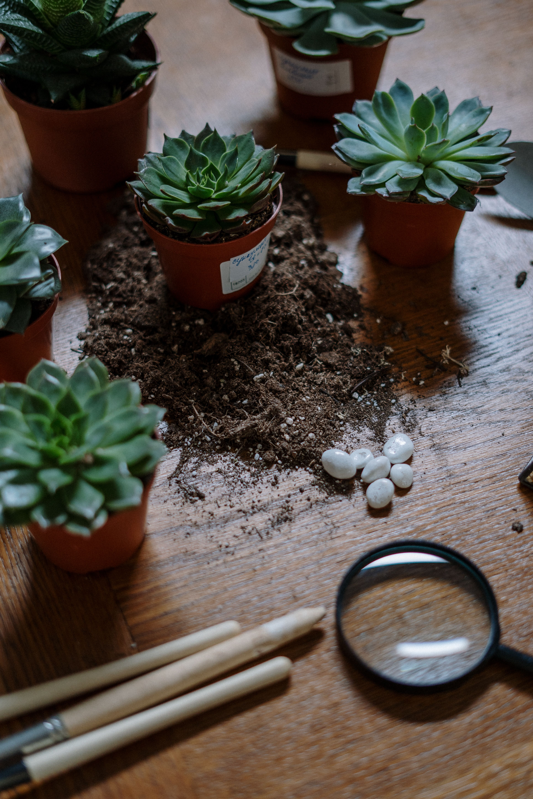
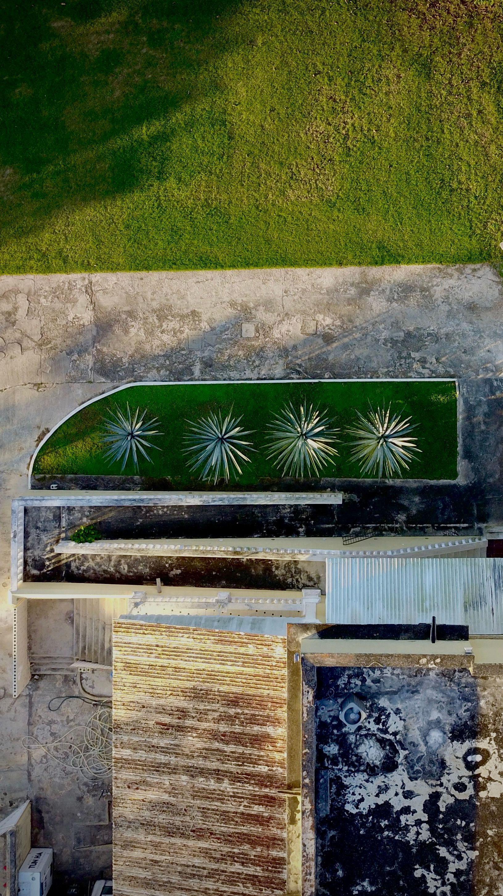
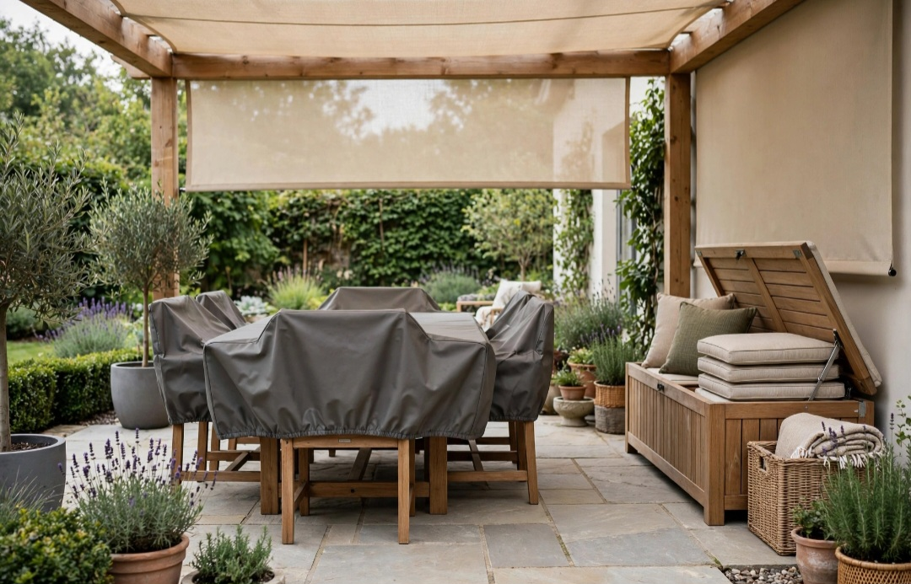

En este artículo
Introducción
Trabajar con diferentes alturas aporta profundidad y movimiento al jardín. Árboles pequeños, arbustos, herbáceas, cubresuelos, macetas y estructuras pueden crear capas visuales siempre que se planifiquen según el clima, la luz y el mantenimiento.
Antes de realizar cambios, conviene observar las condiciones reales, medir y definir qué quieres mejorar. Una planificación sencilla evita compras impulsivas y permite que cada elemento tenga una función clara.
Planifica la estructura y los niveles
Empieza observando el jardín desde los puntos principales: entrada, ventanas y zonas de descanso. Dibuja áreas de fondo, plano medio y primer plano. Esta organización evita colocar plantas altas delante de especies que después quedarán ocultas.
Considera también la topografía existente. Un desnivel natural puede convertirse en parte del diseño, pero modificar pendientes o construir muros requiere valorar drenaje y estabilidad. Para cambios estructurales importantes, consulta a un profesional.
Las alturas deben relacionarse con la escala del espacio. En un jardín pequeño, un árbol de porte contenido puede proporcionar estructura sin dominar. En parcelas amplias, grupos de arbustos y árboles crean transiciones más naturales.
Deja recorridos y accesos para mantenimiento. Una composición muy densa puede verse atractiva al principio y resultar imposible de podar o limpiar cuando las plantas maduren.
Antes de tomar una decisión definitiva, trabaja por etapas. Primero resuelve la función y después la estética. Esta secuencia reduce compras impulsivas y permite detectar si un problema de decoración era en realidad un problema de circulación, escala o almacenamiento.
Haz fotografías durante el proceso. La cámara simplifica la escena y ayuda a detectar desequilibrios. También conviene observar el espacio por la mañana y por la noche, porque la luz puede cambiar por completo la percepción de colores y volúmenes.
Combina plantas por altura y volumen
Selecciona plantas por tamaño adulto, no por el tamaño del ejemplar en el vivero. Revisa altura, anchura, ritmo de crecimiento y necesidades de luz. Colocar una especie vigorosa en un espacio insuficiente obliga a podas constantes.
Una estructura clásica utiliza plantas altas al fondo, medianas en el centro y bajas delante, pero no debe aplicarse de forma rígida. Repetir algunas alturas y permitir que ciertos ejemplares sobresalgan produce un resultado más natural.
Combina formas además de alturas. Gramíneas verticales, arbustos redondeados y cubresuelos rastreros crean contraste. La textura de hojas también ayuda a diferenciar capas incluso cuando los colores son similares.
Agrupa especies con necesidades compatibles de agua y suelo. Un diseño visualmente perfecto puede fracasar si obliga a regar de forma contradictoria plantas vecinas.

El presupuesto debe definirse antes de comprar. Prioriza las piezas que afectan al uso diario y deja los accesorios para el final. Una solución adecuada y duradera suele aportar más valor que varias compras pequeñas realizadas sin planificación.
Reutilizar elementos existentes también forma parte del diseño. Mover, limpiar, reparar o dar una función diferente a una pieza puede resolver una necesidad sin aumentar la cantidad de objetos en casa o jardín.
Utiliza contenedores y elementos elevados
Macetas de distintos tamaños permiten crear altura sin modificar el terreno. Utiliza recipientes estables y proporcionados a la planta. Evita colocar macetas pesadas sobre estructuras que no estén diseñadas para soportarlas.
Pérgolas, arcos y trepadoras introducen un nivel vertical adicional. Deben instalarse correctamente y elegirse según la fuerza de la planta adulta. Algunas trepadoras alcanzan un peso considerable.
Los bancales elevados también crean variación y pueden facilitar el cultivo. Necesitan drenaje, sustrato apropiado y dimensiones que permitan acceder al centro sin pisar la zona de plantación.
No añadas estructuras únicamente para aumentar altura. Cada elemento debería aportar sombra, soporte, cultivo, división visual o algún propósito claro.
El mantenimiento futuro merece atención desde el principio. Materiales delicados o soluciones difíciles de limpiar pueden resultar atractivos en una imagen y poco prácticos en la vida diaria. Revisa instrucciones de cuidado y piensa en clima, mascotas, niños y frecuencia de uso.
La seguridad tampoco debe sacrificarse por estética. Fijaciones, estabilidad, superficies antideslizantes, cargas y recorridos deben resolverse correctamente. Cuando una instalación supera un cambio decorativo sencillo, busca asesoramiento profesional.
Mantén equilibrio, acceso y mantenimiento
El equilibrio depende de distribuir masas, no de crear simetría perfecta. Un árbol en un lado puede compensarse visualmente con un grupo de arbustos en el otro. Observa el jardín desde lejos y durante distintas estaciones.
Planifica el mantenimiento desde el inicio. Deja espacio para podar, retirar hojas y acceder al riego. Las plantas no deberían bloquear caminos cuando alcancen su tamaño adulto.
Considera cómo cambia la altura a lo largo del año. Herbáceas pueden desaparecer en invierno y gramíneas secarse. Arbustos perennes o elementos estructurales mantienen el esqueleto cuando otras plantas descansan.
Revisa el diseño anualmente. Trasplanta ejemplares cuando todavía sea viable y corrige desequilibrios antes de que se conviertan en problemas grandes.

Deja espacio para que el ambiente evolucione. No es necesario completar todos los rincones de inmediato. Vivir con la nueva distribución durante unos días permite descubrir qué falta realmente y qué huecos conviene mantener libres.
Una revisión cada pocos meses ayuda a retirar lo que ya no funciona. Los espacios agradables no dependen de acumular, sino de conservar una relación clara entre utilidad, proporción y personalidad.
Plan práctico para aplicar estas ideas
Aplicar los cambios de forma gradual permite controlar mejor el resultado. Haz una lista de prioridades, empieza por aquello que afecta a la comodidad y comprueba el efecto antes de continuar. Cuando una solución ya funciona, no es necesario añadir más elementos.
También conviene establecer una rutina sencilla de mantenimiento. Dedicar unos minutos de forma periódica a limpiar, ordenar y revisar evita que pequeños problemas se acumulen. Un diseño duradero es aquel que puede mantenerse sin esfuerzo desproporcionado.
Si una decisión implica perforaciones importantes, cambios estructurales, electricidad, cargas elevadas o problemas de humedad, la opción prudente es consultar a un profesional cualificado. La decoración debe mejorar el espacio sin crear riesgos.
Revisión final antes de dar el trabajo por terminado
Cuando hayas aplicado los cambios principales, utiliza el espacio con normalidad durante varios días. Observa recorridos, limpieza, comodidad y mantenimiento. Las decisiones que funcionan en una fotografía no siempre responden bien al uso diario, por eso esta prueba es importante.
Retira temporalmente cualquier elemento que genere dudas. Si el espacio funciona mejor sin él, probablemente no era necesario. Esta forma de editar ayuda a mantener proporción y evita que la decoración o el jardín se saturen con el paso del tiempo.
Por último, anota qué materiales, medidas o cuidados has utilizado. Esta información será útil cuando necesites reemplazar una pieza, realizar mantenimiento o ampliar el proyecto en el futuro.
Revisión final antes de dar el trabajo por terminado
Cuando hayas aplicado los cambios principales, utiliza el espacio con normalidad durante varios días. Observa recorridos, limpieza, comodidad y mantenimiento. Las decisiones que funcionan en una fotografía no siempre responden bien al uso diario, por eso esta prueba es importante.
Retira temporalmente cualquier elemento que genere dudas. Si el espacio funciona mejor sin él, probablemente no era necesario. Esta forma de editar ayuda a mantener proporción y evita que la decoración o el jardín se saturen con el paso del tiempo.
Por último, anota qué materiales, medidas o cuidados has utilizado. Esta información será útil cuando necesites reemplazar una pieza, realizar mantenimiento o ampliar el proyecto en el futuro.
Revisión final antes de dar el trabajo por terminado
Cuando hayas aplicado los cambios principales, utiliza el espacio con normalidad durante varios días. Observa recorridos, limpieza, comodidad y mantenimiento. Las decisiones que funcionan en una fotografía no siempre responden bien al uso diario, por eso esta prueba es importante.

Retira temporalmente cualquier elemento que genere dudas. Si el espacio funciona mejor sin él, probablemente no era necesario. Esta forma de editar ayuda a mantener proporción y evita que la decoración o el jardín se saturen con el paso del tiempo.
Por último, anota qué materiales, medidas o cuidados has utilizado. Esta información será útil cuando necesites reemplazar una pieza, realizar mantenimiento o ampliar el proyecto en el futuro.
Revisión final antes de dar el trabajo por terminado
Cuando hayas aplicado los cambios principales, utiliza el espacio con normalidad durante varios días. Observa recorridos, limpieza, comodidad y mantenimiento. Las decisiones que funcionan en una fotografía no siempre responden bien al uso diario, por eso esta prueba es importante.
Retira temporalmente cualquier elemento que genere dudas. Si el espacio funciona mejor sin él, probablemente no era necesario. Esta forma de editar ayuda a mantener proporción y evita que la decoración o el jardín se saturen con el paso del tiempo.
Por último, anota qué materiales, medidas o cuidados has utilizado. Esta información será útil cuando necesites reemplazar una pieza, realizar mantenimiento o ampliar el proyecto en el futuro.
Revisión final antes de dar el trabajo por terminado
Cuando hayas aplicado los cambios principales, utiliza el espacio con normalidad durante varios días. Observa recorridos, limpieza, comodidad y mantenimiento. Las decisiones que funcionan en una fotografía no siempre responden bien al uso diario, por eso esta prueba es importante.
Retira temporalmente cualquier elemento que genere dudas. Si el espacio funciona mejor sin él, probablemente no era necesario. Esta forma de editar ayuda a mantener proporción y evita que la decoración o el jardín se saturen con el paso del tiempo.
Por último, anota qué materiales, medidas o cuidados has utilizado. Esta información será útil cuando necesites reemplazar una pieza, realizar mantenimiento o ampliar el proyecto en el futuro.
Revisión final antes de dar el trabajo por terminado
Cuando hayas aplicado los cambios principales, utiliza el espacio con normalidad durante varios días. Observa recorridos, limpieza, comodidad y mantenimiento. Las decisiones que funcionan en una fotografía no siempre responden bien al uso diario, por eso esta prueba es importante.
Retira temporalmente cualquier elemento que genere dudas. Si el espacio funciona mejor sin él, probablemente no era necesario. Esta forma de editar ayuda a mantener proporción y evita que la decoración o el jardín se saturen con el paso del tiempo.
Por último, anota qué materiales, medidas o cuidados has utilizado. Esta información será útil cuando necesites reemplazar una pieza, realizar mantenimiento o ampliar el proyecto en el futuro.
Preguntas frecuentes
¿Cuál es la mejor manera de empezar?
Empieza midiendo y observando el espacio antes de comprar. En cómo diseñar un jardín con diferentes alturas, la planificación permite tomar decisiones proporcionadas y evitar cambios innecesarios.
¿Cuánto tiempo se necesita para ver resultados?
Los primeros cambios pueden apreciarse de inmediato, pero conviene probar la distribución y los materiales durante varios días antes de considerar el resultado definitivo.
¿Qué errores deberían evitarse?
Evita comprar sin medir, saturar el espacio, ignorar el mantenimiento y elegir soluciones únicamente por tendencia sin considerar el uso cotidiano.
Conclusión
Cómo diseñar un jardín con diferentes alturas requiere combinar estética y función. Medir, observar, elegir materiales adecuados y avanzar por etapas permite conseguir un resultado más coherente, fácil de mantener y adaptado a la vida cotidiana.